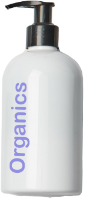

髪の未来を変える
髪は、肌以上にダメージが見えにくい。だからOrganicsでは成分の一つひとつを見直し、
髪、頭皮そして地球にも負担をかけない、ノンシリコン オーガニック ヘアシャンプーをつくりました。
パーマやカラー、ドライヤの熱などで傷んだ髪と頭皮を驚くほどサラサラの美髪へと変えていけるのは、
植物に秘められた力を最大限に生かしているからです。
ラベンダーやジャスミン、オリーブなど数種類の天然精油を贅沢にブレンドした
ラグジュアリーな香りと植物のピュアな優しさを感じてください。
ノンシリコン オーガニック ヘアシャンプー
Natural & Floral
３つの働き

毛穴をふさがず、髪の芯に美髪成分を送り込む。
毛穴詰まりを引き起こしやすいシリコンなどのコーティング剤は使用せず、
頭皮環境を健やかに整えながら髪の芯まで美髪成分を送り込みます。

髪と頭皮のための厳選成分で「驚くほどサラッと」した髪へ。
髪と頭皮のために選び抜かれた19種類の植物由来アミノ酸成分を配合。
頭皮に必要なうるおいを残したまま、皮脂汚れを落としてサラサラの美髪へ。
植物由来のアミノ酸成分でダメージヘアを補修。
髪の主成分であるタンパク質は、約20種類のアミノ酸。髪と同じ弱酸性の
アミノ酸を高配合し、髪のダメージを内部から補修して輝きを与えます。


ノンシリコン オーガニック ヘアシャンプー
< ナチュラル＆フローラル >
Non-silicon organic hair shampoo
< Natural & Floral >
350ml 2,200円(税込)


ノンシリコン オーガニック コンディショナー
< ナチュラル＆フローラル >
Non-silicon organic hair conditioner
< Natural & Floral >
350ml 2,200円(税込)